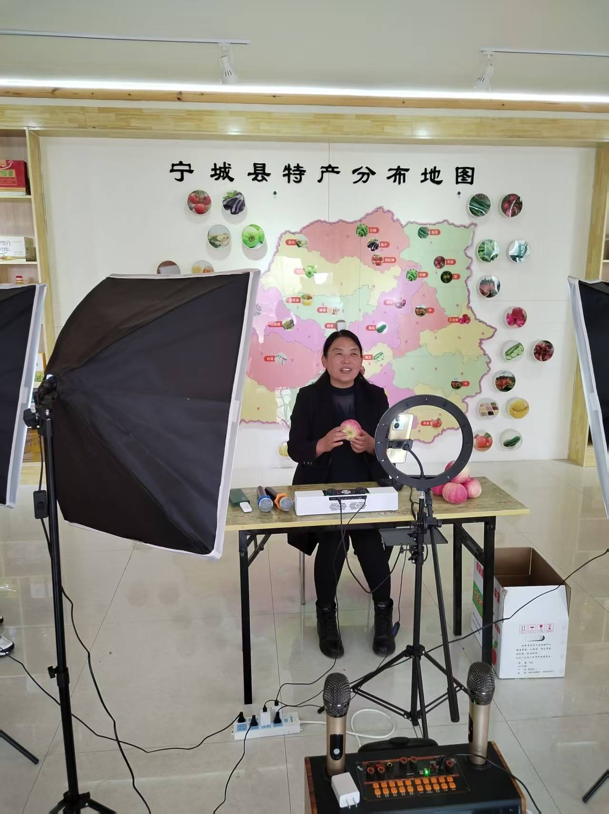

为助力宁城本地苹果拓宽线上销售渠道，帮助果农解决集中上市期的销售难题，近日，赤峰市启跃文化传媒有限公司在宁城县特色农产品直播间，成功开展宁城苹果直播助农专场活动，以电商直播为纽带，让本地优质苹果通过云端走向全国消费者手中。
宁城地处燕山北麓，得天独厚的光照条件、沙质土壤与昼夜温差，孕育出了果肉脆甜多汁、果香浓郁醇厚的优质苹果，是当地农户增收致富的重要特色产业。但受限于线下销售渠道单一、市场信息不对称等因素，部分果农面临“好果难卖、丰产不丰收”的困境。
聚焦这一难题，启跃传媒精心筹备本次苹果助农直播专场。直播间内，背景的“宁城县特产分布地图”直观展示了本地特色农产资源，货架上整齐陈列着各类宁城农特产品，专业灯光设备搭建起沉浸式直播场景。主播团队围绕宁城苹果的产地优势、种植环境、口感特点、保鲜配送方式等内容进行全方位讲解，现场展示苹果品质、分享食用场景，与线上观众实时互动答疑、发放专属优惠福利，让全国网友直观了解并放心选购宁城优质苹果。
本次直播坚持“产地直供、现摘现发、新鲜直达”的原则，精选宁城本地优质苹果，严格把控品质筛选与包装配送环节，省去中间流通环节，既保障了苹果的新鲜度，又以实惠价格惠及消费者，更让收益直接返还给果农。直播期间，直播间人气持续攀升，订单量稳步增长，有效打破了地域销售壁垒，大幅拓宽了宁城苹果的线上销售半径，切实缓解了果农的销售压力。
此次苹果直播助农专场，是赤峰市启跃文化传媒有限公司深耕乡村助农领域、践行企业社会责任的又一务实举措。通过“直播电商+助农惠农”的模式，不仅有效提升了宁城苹果的品牌知名度与市场销量，更搭建起田间地头与全国市场的云端桥梁，为本地果农增收赋能。
未来，赤峰市启跃文化传媒有限公司将继续聚焦宁城各类时令农特产品，持续开展番茄、甜瓜、杂粮等系列助农直播专场，不断优化直播运营与供应链服务，以数字电商为抓手，持续助力本地农特产品走出宁城、走向全国，为乡村振兴事业注入源源不断的电商动能。
